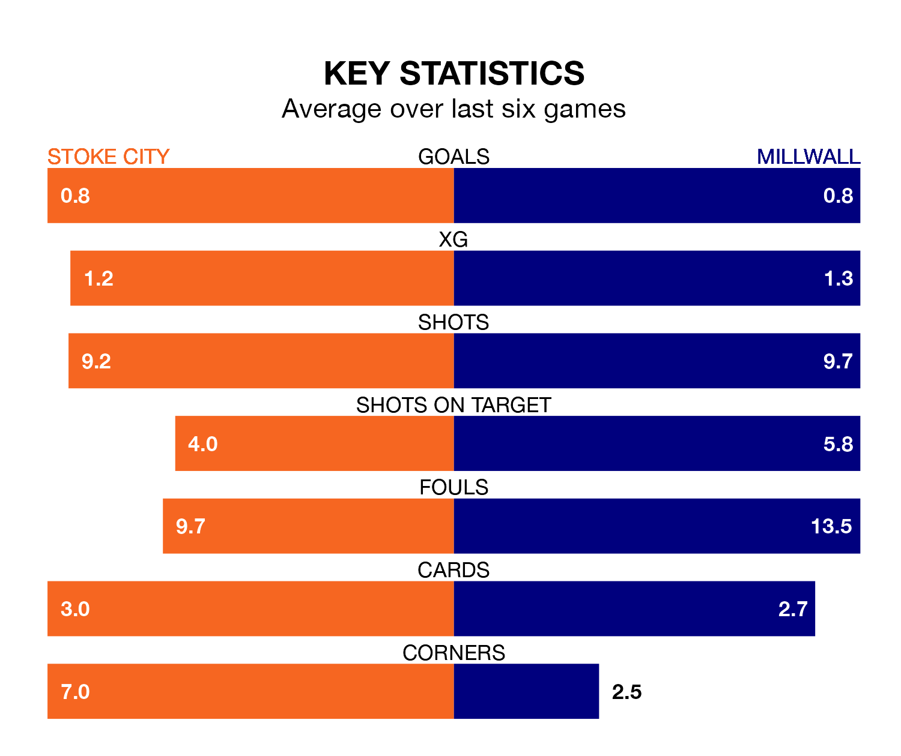

Stoke City and Millwall both come into Saturday's kick-off at the bet365 Stadium in terrible form, having picked up only two points each in their last six games.
The two teams have each collected two draws and four losses from their last six outings.
Millwall are 20th in the table after 22 games, of which they have won five and drawn seven, earning 22 points.
Stoke are one place ahead of the Lions in 19th, with six wins and five draws putting them on 23 points.
With 21 goals in 22 games so far this season, City are scoring at below the league average rate with 1.0 goals per game. And they are conceding at an average rate, letting in 30 goals at a rate of 1.4 per game.
The visitors are also below average scorers, with 1.1 goals per game, compared to a league average of 1.4. They have conceded 1.4 goals per game.
In the last three years, Stoke and Millwall have played each other on six occasions. Stoke won one of them and Millwall the other.
On average, the Potters scored 0.7 goals and the Lions 1.3 in those matches.
Their last meeting was on August 26, when Millwall won 1-0 at home.
Stoke's last match was on Sunday, a 1-1 draw against West Bromwich Albion, with Lynden Gooch getting the goal for the Potters.
Millwall drew 1-1 with Huddersfield Town last time out, on December 16, with Brooke Norton-Cuffy on the scoresheet.
